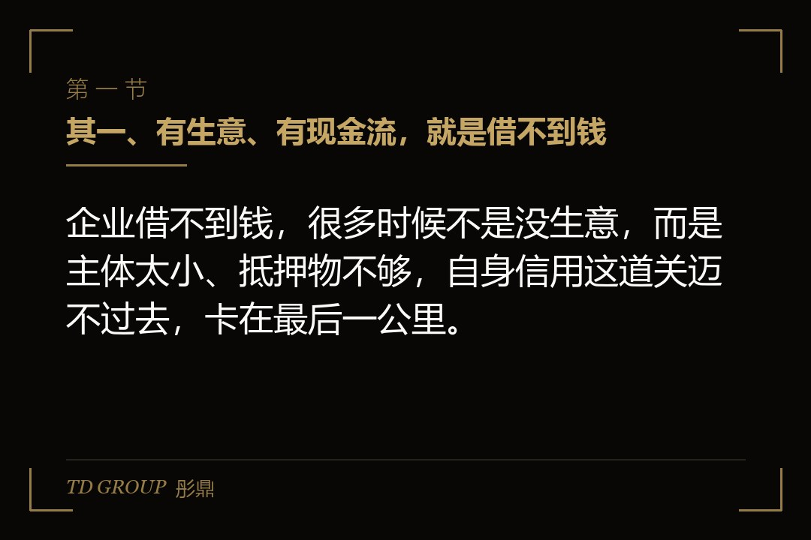
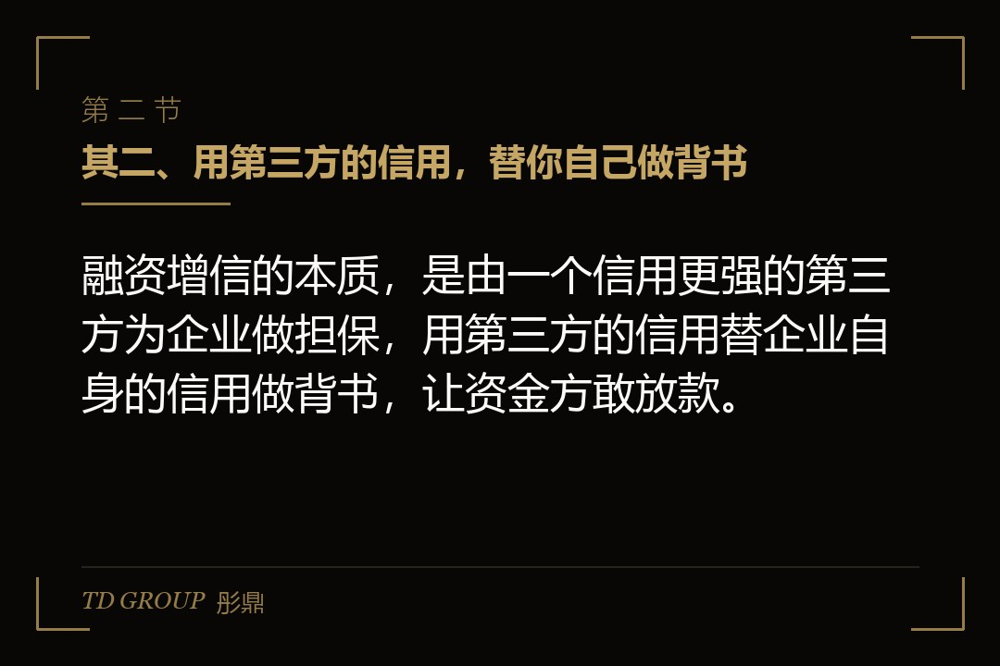
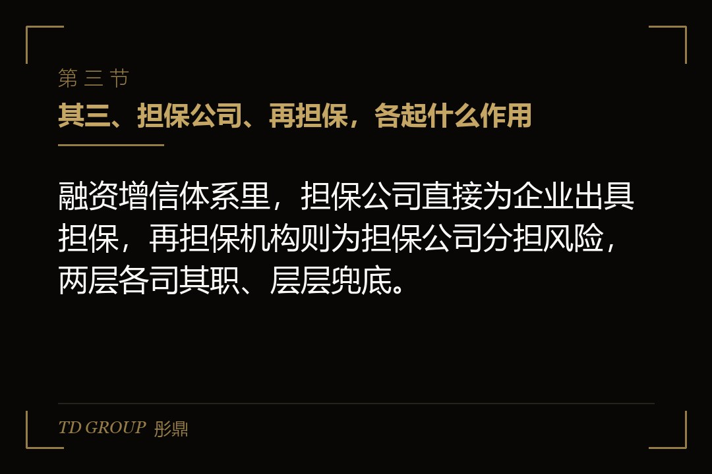

其一、有生意、有现金流，就是借不到钱

结论先行：企业借不到钱，很多时候不是没生意，而是主体太小、抵押物不够，自身信用这道关迈不过去，卡在最后一公里。
假设有家做精密零部件加工的企业，订单稳定，下游是几家大客户，账上的现金流也算健康。但它的主体规模不大，厂房是租的，机器设备也折得差不多了，能拿出来抵押的东西实在有限，去银行申请贷款，每次都卡在抵押物这一项上。
它去银行申请贷款，银行认可它的经营，但一算抵押物，额度就卡在那里。要么额度给得很小，要么干脆要求它再补担保。企业手里有订单、有能力还款，就是缺一个能让银行放心的东西，就像一个人有收入有本事，却因为没有房产做抵押，被挡在了信贷的门槛外。
这就是很多中小企业的真实处境：不是经营不行，是信用这关迈不过去，眼看着有订单、有现金流的生意，就因为缺一块抵押物、缺一份背书而做不大。这时候，增信机构就登场了，它的作用，就是专门替这类「经营好、底子薄」的企业，去补上那块够不着的信用。
其二、用第三方的信用，替你自己做背书

结论先行：融资增信的本质，是由一个信用更强的第三方为企业做担保，用第三方的信用替企业自身的信用做背书，让资金方敢放款。
打个比方，你自己去借钱，对方看你年轻、没家底，不敢借；这时候有个德高望重、家底厚实的长辈站出来，说这笔钱我来担保，还不上我替他还。对方一听，就愿意借了。增信机构扮演的，就是这个担保人的角色，它用自己的家底和信用，替你兜住了对方最担心的那个风险。
银行愿意给有担保公司背书的企业放款，逻辑也在这里。银行的授信体系对担保公司的信用是认可的，它评估的不再只是企业自己，而是「企业加担保公司」这个组合的还款能力。组合起来信用够了，款就放下来了，原本卡在抵押物上的额度也就松动了。
所以增信机构的根本价值，是把它长期积累起来的信用，借给那些自身信用暂时不够、但经营真实的企业用。它赚的，就是这个信用差——它自己的信用比企业值钱，它把这个差值拿出来卖，收一笔担保费，替企业扛下银行不敢扛的那部分风险。
其三、担保公司、再担保，各起什么作用

结论先行：融资增信体系里，担保公司直接为企业出具担保，再担保机构则为担保公司分担风险，两层各司其职、层层兜底。
担保公司是直接面对企业的那一层。它审查企业的经营、现金流、还款来源，认为可行的，就出具担保，企业拿这份担保去银行贷款。担保公司收的是担保费，承担的是企业违约时的代偿责任，也就是企业还不上的时候，它要替企业把钱还给银行。
再担保机构是担保公司背后的一层。担保公司也有风险，代偿多了自己也会撑不住，所以它会把一部分风险转给再担保机构，由再担保机构对担保公司的代偿责任提供再保险式的支持。有了再担保，担保公司才敢做更多的业务，银行也才更放心，整个增信体系才能一层一层地铺开。
对企业来说，理解这两层的意义在于：你签的担保公司，它背后有没有再担保、它自身是不是稳健，直接决定了这份担保的成色。一个自身都摇摇欲坠的担保公司，出的担保含金量是要打问号的，银行可能表面放款了，暗地里仍然把风险计在你头上。
其四、代价不止是担保费
结论先行：用增信的综合成本，远不止一笔担保费，反担保、保证金、以及可能的捆绑要求，都要放在一起算进去，才算得出真实代价。
最直接的是担保费。担保公司不是白干，它要按担保金额的一定比例收费，这个比例往往不低，而且可能要求企业一次性支付。这笔钱是实打实的融资成本，要在借款到手之前就先付出去，等于企业实际到手的钱，比名义上的借款金额少了一截。
第二层是反担保。担保公司替你担了风险，它也要保护自己，所以常常要求企业提供反担保，比如把股权、设备、应收账款押给担保公司，或者要求实控人个人承担连带责任。表面上是企业找担保公司帮忙，实际上企业把自己能押的东西，又押给了担保公司，等于用另一种方式补上了自己当初缺的那块抵押物。
第三层是保证金。有些担保公司会要求企业交一笔保证金，占担保金额的一定比例，等于企业先拿一部分钱押在那里，再去借一笔更大的钱。这笔保证金在担保期内往往不能动，等于又占用了一部分企业的资金。
这三样加起来，增信的代价可能比企业预想的要重得多。所以用之前，一定要把综合成本算清楚，把每一笔要付的钱、每一件要押出去的东西都摆在明面上，一项一项问清楚、写进合同，别被「帮你解决融资难」这句好听话遮住了眼睛。
其五、坑主要藏在三个地方
结论先行：融资增信里的坑，主要集中在收费不透明、反担保过度、以及担保机构自身不够稳健这三点上，样样都要防。
头一个是收费不透明。除了明面上的担保费，有些机构还以咨询费、服务费、评审费等各种名目加收费用，加起来大大超过它明说的那个比例。企业如果不一项项问清楚、逐条写进合同，很容易在签约后被各种追加费用打个措手不及，最后算总账才发现，这笔钱借得一点都不便宜，甚至比民间拆借还贵。
第二个是反担保过度。担保公司为了自保，可能要求企业提供远超合理范围的反担保，甚至把企业核心的经营资产都押进去。一旦企业后续还想融资或者处置资产，就会发现自己动弹不得，所有值钱的东西都被一张担保合同锁死了。
第三个是担保机构自身的风险。有些担保机构自身经营不规范、资本金不足、代偿能力有限，它出的担保看起来是企业借到了钱，实际上是把风险转嫁给了企业，甚至有些机构自身就有违法违规的问题。选担保机构，和选银行一样要查清楚对方的底细，别让一个比自己还不靠谱的机构，来给自己的信用背书。
其六、要不要用、怎么用，先核清四件事
结论先行：要不要用融资增信，先把自身信用差在哪、综合成本算多少、反担保重不重、机构稳不稳这四件事核清，再决定签不签。
其一，自身信用到底差在哪。是抵押物不够，还是主体太小，还是历史信用记录有问题。先搞清楚自己缺的是哪一块，再判断增信是不是对症，别用一个不对症的工具去解决一个没搞清的问题。
其二，综合成本算下来多少。把担保费、保证金、各种名目的费用加总，折算成这笔融资真实的一年成本，和不用增信、或者换一种融资方式比一比，看这笔钱到底值不值得花，别只盯着「能借到」就签字。
其三，反担保重不重。看清楚自己要押出去什么，会不会影响后续的经营和再融资，别为了借一笔钱，把自己绑死，以后想动哪块资产、想做哪笔新的融资都动不了。
其四，机构稳不稳。查清楚担保公司的资质、资本实力、有没有再担保、历史代偿记录，别把信用托付给一个自身都靠不住的机构，到头来担保形同虚设。
这四件事想清楚，融资增信才是一个帮你跨过信用门槛的工具；没想清楚就签，它可能只是用一笔不低的总成本，把你从「借不到钱」变成了「借到了钱、却被反担保和费用捆住」，最后算下来，还不如当初老老实实把抵押物补足、把信用养起来。
本文为知识梳理，不构成专业意见。融资增信涉及的担保责任、费率、反担保安排与保证金要求，均以正式担保合同及担保机构的实际口径为准，建议由律师与财务顾问共同核过之后再签。